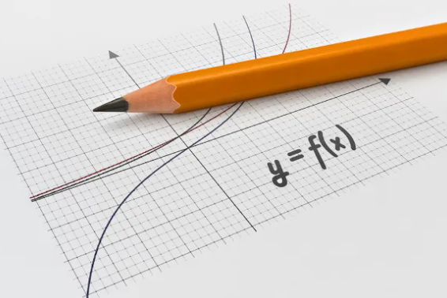
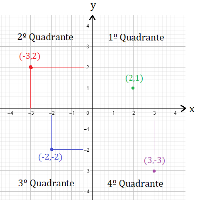
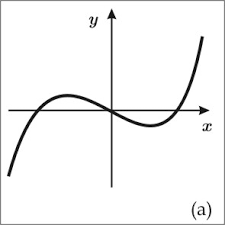
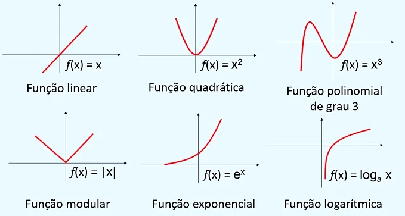

Gráfico de funções
O gráfico de uma função é uma representação visual que ilustra a relação entre os valores de entrada (domínio) e os valores de saída (imagem) da função. Ele é uma ferramenta poderosa para entender o comportamento e as características de uma função. Vamos explorar os principais aspectos do gráfico de uma função:
Eixo X (Horizontal): O eixo horizontal do gráfico representa os valores de entrada, também conhecidos como valores da variável independente (geralmente representados como x). Cada ponto ao longo desse eixo corresponde a um valor específico de x.
Eixo Y (Vertical): O eixo vertical do gráfico representa os valores de saída, também conhecidos como valores da variável dependente (geralmente representados como y ou f(x)). Cada ponto ao longo desse eixo corresponde ao valor calculado da função para o valor correspondente de x.
Pontos no gráfico: Os pontos no gráfico são os resultados da função para diferentes valores de x. Ao traçar vários pontos, você começa a formar um padrão que representa o comportamento geral da função.
Linha ou Curva da função: A forma da linha ou curva que conecta os pontos no gráfico é o que realmente representa a função. A maneira como essa linha ou curva se comporta em relação aos eixos x e y fornece informações sobre a natureza da função.
Interseções com eixos: Os pontos onde o gráfico da função cruza o eixo x são os zeros da função, ou seja, os valores de x para os quais f(x) = 0. As interseções com o eixo y mostram o valor da função quando x = 0.
Inclinação e curvatura: A inclinação da linha ou curva em diferentes partes do gráfico indica o comportamento da função. Uma inclinação crescente indica que a função está aumentando à medida que x aumenta, enquanto uma inclinação decrescente indica o contrário. A curvatura da linha ou curva pode mostrar mudanças na taxa de crescimento ou a presença de pontos de inflexão.
Máximos e mínimos: Pontos onde a inclinação muda de positiva para negativa (ou vice-versa) podem indicar pontos de máximo ou mínimo da função.
Comportamento assintótico: Em alguns casos, o gráfico pode se aproximar de linhas chamadas assíntotas, que são retas horizontais, verticais ou oblíquas que o gráfico se aproxima, mas não cruza.
Variações de amplitude e período: Para funções trigonométricas, como seno e cosseno, o gráfico mostra oscilações em um padrão regular, com variações de amplitude e período.
Aplicações e significados: Além de visualizar a função, o gráfico pode ter significado prático em contextos do mundo real. Ele pode representar relações entre quantidades, movimentos, crescimento, decaimento, entre outras interpretações.
O gráfico de uma função é uma ferramenta essencial para entender como a função se comporta em relação às suas variáveis. Ele permite que você veja padrões, tendências e propriedades de uma forma muito mais intuitiva e visual do que apenas observando fórmulas e valores numéricos.